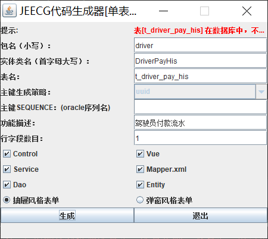
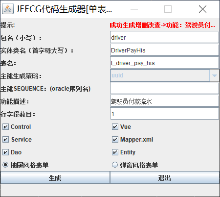
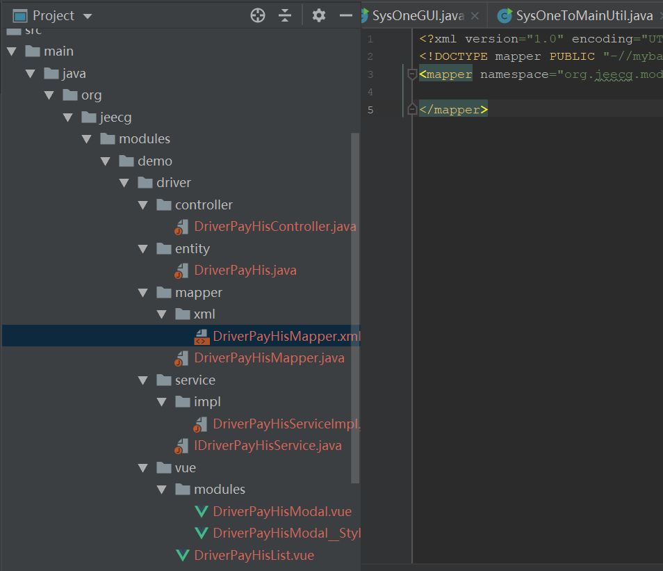

jeecg_database.properties 以mysql为例：
diver_name=com.mysql.jdbc.Driver
url=jdbc:mysql://192.168.*.*:3306/car?useUnicode=true&characterEncoding=UTF-8&useSSL=false
username=root
password=dp@ssord
database_name=carjeecg_config.properties
#code_generate_project_path
project_path=D:\\SourceProject\\car
#bussi_package[User defined]
bussi_package=org.jeecg.modules.demo
#default code path
#source_root_package=src
#webroot_package=WebRoot
#maven code path
source_root_package=src.main.java
webroot_package=src.main.webapp
#ftl resource url
templatepath=/jeecg/code-template
system_encoding=utf-8
#db Table id [User defined]
db_table_id=id
#db convert flag[true/false]
db_filed_convert=true
#page Search Field num [User defined]
page_search_filed_num=1
#page_filter_fields
page_filter_fields=update_time,service_id
运行生成器 SysOneGUI.java：
输入包名、对应的实体类名、数据表名、描述。如果表不存在会有提示。

生成完毕：

log：
16:21:01.408 [AWT-EventQueue-0] DEBUG org.jeecgframework.codegenerate.database.DbReadTableUtil - 数据库驱动: com.mysql.jdbc.Driver
......
16:21:02.582 [AWT-EventQueue-0] INFO org.jeecgframework.codegenerate.generate.impl.CodeGenerateOne - ----jeecg----Code----Generation-----[单表模型：t_driver_pay_his]------ 生成完成。。。按如上配置，生成的文件在 D:\SourceProject\car\src\main\java\org\jeecg\modules\demo\driver下，包括全套的entity、mapper、service、controller，以及前端的vue文件，从而解放了我们很多重复的机械性的工作。目录结构：

常见问题1：生成代码时提示：ERROR ： 表 [ t_driver_pay_his ] 在数据库中，不存在 ！请确认数据源配置是否配置正确、表名是否填写正确~
明明db里有，配置的db连接也是正确的，却总是提示这个。什么原因？
这里有一个细节，jeecg默认用大写的表名去读取表结构信息，即数据表名得是大写，然后生成器也得填写这个大写的表名才能生成。Linux下安装的MySQL默认是区分表名的大小写，不区分列名的大小写。那怎么才能支持小写的表名生成呢？这要设置数据库不要区分表名的大小写。用ROOT登录服务器，修改mysql配置文件/etc/my.cnf，在[mysqld]下加入一行：lower_case_table_names=1。然后，重启数据库服务：systemctl restart mysqld。
常见问题2：数据库连接配置useSSL参数。
如果生成代码时，有如下提示，则在数据库连接配置上加上useSSL=false即可。
16:08:31.625 [AWT-EventQueue-0] DEBUG org.jeecgframework.codegenerate.database.DbReadTableUtil - 数据库驱动: com.mysql.jdbc.Driver
Thu Dec 05 16:08:31 CST 2019 WARN: Establishing SSL connection without server's identity verification is not recommended. According to MySQL 5.5.45+, 5.6.26+ and 5.7.6+ requirements SSL connection must be established by default if explicit option isn't set. For compliance with existing applications not using SSL the verifyServerCertificate property is set to 'false'. You need either to explicitly disable SSL by setting useSSL=false, or set useSSL=true and provide truststore for server certificate verification.
OVER！
上周日（12月1日）参加三夫香山越野21公里赛。在冷峻的山林激情穿越，成绩还不错。附一张照片，嘿嘿！
☞ Stay Hungry,Stay Foolish. 如果对阁下有帮助，就动动手指，点一下“推荐”哟~